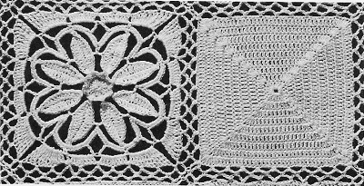

Daisy In The Dell - Free Crochet Bedspread Pattern MATERIALS: J. & P. COATS "KNIT-CRO-SHEEN", Art. A. 64: Single Size Spread: 60 balls of No. 1 White and 3 balls of No. 10-A Canary Yellow. Double Size Spread: 76 balls of No. 1 White and 3 balls of No. 10-A Canary Yellow. Milwards Steel Crochet Hook No. 7. Motif measures 5 inches square FLOWER MOTIF: Starting at center with Yellow, ch 4. 1st rnd: 15 dc in 4th ch from hook. Join with sl st to top of starting chain. 2nd rnd: Picking up front loops only, ch 1, sc in joining, (in next dc make hdc, dc and hdc; sc in next dc) 7 times; in last dc make hdc, dc and hdc. Join to first sc. Break off and fasten. FIRST PETAL: Holding sts of last rnd forward and picking up the free loop of the dc on first rnd throughout, attach White to first dc following the ch-3. First Half: Ch 15, sl st in 2nd ch from hook, sc in next ch, hdc in next ch, dc in next 9 ch, hdc in next ch, sc in next ch, sl st in same place as thread was attached. Second Half: Working along opposite side of starting chain, sc in next ch, hdc in next ch, dc in next 9 ch, hdc in next ch, sc in next ch, sl st in next ch. Break off and fasten. SECOND PETAL-First Half: Skip next free loop to the left of last petal on first rnd, attach thread to next free loop on same rnd, then repeat First Half of First Petal. Second Half: Working along opposite side of starting chain, sc in next ch, hdc in next ch, dc in next 3 ch; now join 2 petals as follows: thread over, insert hook in next ch and draw loop through, thread over and draw through 2 loops on hook, insert hook in 6th dc from tip of previous petal, thread over and draw loop through, thread over and draw through all loops on hook; working on Second Petal only, dc in next 5 ch, hdc in next ch, sc in next ch, sl st in next ch. Break off and fasten. Repeat Second Petal 5 more times. Last Petal: Work as for Second Petal, joining last petal to first petal and to previous petal. Do not break off. Now work in rnds as follows: 1st rnd: Ch 1, sc in tip of petal, (ch 9, sc in next joining sp between petals, ch 9, sc in tip of next petal) 7 times; ch 9, sc in next joining sp between petals, ch 9. Join to first sc. 2nd rnd: Ch 1, sc in joining, * 11 sc in each of next 2 loops, sc in next sc. Repeat from * around, ending with 11 sc in last loop. Join as before. 3rd rnd: Ch 1, sc in joining, * ch 7, (tr in center sc of next loop) twice; ch 7, sc in sc at tip of next petal. Repeat from * around, ending with ch 7. Join. 4th rnd: In next loop make sl st, ch 3 and 8 dc; 9 dc in next loop, * in next loop make 2 dc, 3 tr, 3 d tr, 3 tr tr, ch 2 (corner); in next loop make 3 tr tr, 3 d tr, 3 tr and 2 dc; 9 dc in each of next 2 loops. Repeat from * around, ending with 3 tr tr, 3 d tr, 3 tr and 2 dc in last loop. Join to top of ch-3. 5th rnd: Ch 1, sc in joining, (ch 5, skip next 3 dc, sc in next dc) twice; * (sc in next st, ch 5, skip next 3 sts) 5 times; in corner sp make sc, ch 7 and sc; (ch 5, skip next 3 sts, sc in next st) 5 times. Repeat from * around, ending with ch 5. Join to first sc. Break off and fasten. PLAIN MOTIF: Starting at center with White, ch 4. 1st rnd: 19 dc in 4th ch from hook. Join with sl st to top of starting chain (20 dc, counting ch-3 as 1 dc). 2nd rnd: Ch 3, 2 dc in joining, (dc in next 4 dc, 5 dc in next dc corner group) 3 times; dc in next 4 dc, 2 dc in first st used at beg of rnd to complete first corner group. Join to top of ch-3. 3rd rnd: Ch 3, 2 dc in joining, dc in each dc around, making 5 dc in center dc of each corner group, ending with 2 dc in first st used at beg of rnd. Join to top of ch-3. Next 4 rnds: Repeat 3rd rnd. 8th and 9th rnds: Ch 3, 3 dc in joining, dc in each dc around, making 7 dc in center dc of each corner group, ending with 3 dc in first st used at beg of rnd. Join (164 dc at end of 9th rnd). 10th rnd: Ch 1, sc in joining, now join 2 motifs along one side as follows: Ch 3, sl st in any corner loop on Flower Motif, ch 3, sc in same joining on Plain Motif, (ch 2, sl st in next loop on Flower Motif, ch 2, skip next 3 dc on Plain Motif, sc in next dc) 5 times; (sc in next dc on Plain Motif, ch 2, sl st in next loop on Flower Motif, ch 2, skip next 3 dc on Plain Motif) 5 times; sc in next dc on Plain Motif, ch 3, sl st in next corner loop on Flower Motif, ch 3, sc in same dc where last sc was made on Plain Motif; working on Plain Motif only, * (ch 5, skip next 3 dc, sc in next dc) 5 times; (Sc in next dc, ch 5, skip next 3 dc) 5 times; in next dc make sc, ch 7 and sc. Repeat from * around, ending with ch 5. Join to first sc. Break off and fasten. Having a Flower Motif at each corner and alternating the Motifs, for Single Size Spread make 15 rows of 21 motifs and for Double Size Spread make 19 rows of 21 motifs, joining motifs as Plain Motif was joined to Flower Motif (where corners meet, join corners to previous joinings). BORDER: 1st rnd: Attach White in any corner loop, ch 3, dc in same loop, * 4 dc in each of next 10 loops, 2 dc in each of next 2 joined loops. Repeat from * across to within next corner loop, in corner loop make 2 dc, ch 3 and 2 dc. Work remaining 3 sides in same manner, ending with 2 dc in first loop used, ch 1, hdc in top of ch-3 to form last corner sp. Next 3 rnds: Ch 3, dc in same sp, dc in each dc around, making in each corner sp 2 dc, ch 3 and 2 dc; and ending with 2 dc in first sp used, ch 1, hdc in top of ch-3. At end of last rnd, end with ch 3. Join to top of ch-3. Break off and fasten. Block to measurements.  HOME |